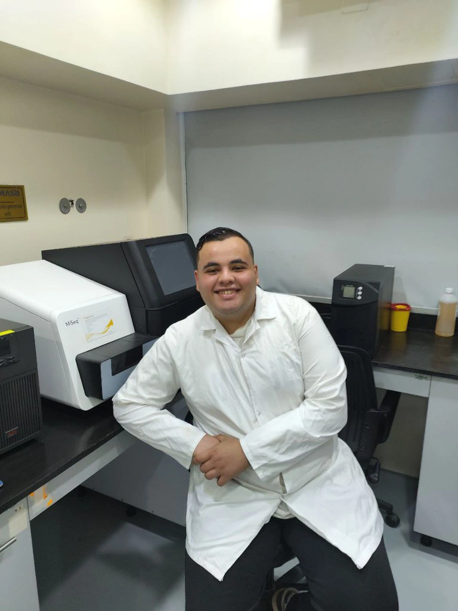

Tawfek Ahmed
Molecular biologist & microbiologist with hands‑on experience in PCR, DNA/RNA extraction, microbial antagonism, enzyme characterization, and R‑based bioinformatics.

🔬 Research experience
Research Assistant – Microbiology Lab
- Supported 18‑month Master's research: media preparation, sterilization, lab operations.
- Enzyme isolation, production workflows, and data reproducibility.
- Participated in experimental planning and result interpretation.
Graduation Project: Endophytic Bacteria vs. Molds
- Isolated endophytic bacteria from multiple plant species.
- Performed antagonism tests against fungal pathogens.
- Eco‑friendly biocontrol alternative to chemical agents.
🧪 Technical radar & skills
Hands-on expertise
Languages & soft skills
📜 Training & certifications
🧬 Bioinformatics & biomarker discovery
R programming · HackBio · OmniGenics
OmniGenics (Remote): Completed focused training in R programming – from foundational concepts to applied biological data analysis.
HackBio (Remote): Worked on multiple bioinformatics projects with primary focus on breast cancer biomarker discovery. Gained hands‑on experience with transcriptomics data analysis, differential expression, volcano plots, and data interpretation workflows.
Skilled in data wrangling, ggplot2 visualisation, and statistical analysis for genomics.
res <- results(dds, contrast = c("condition", "tumor", "normal"))
sig_genes <- subset(res, padj < 0.05 & abs(log2FoldChange) > 1)
# Visualise with ggplot2
ggplot(sig_genes, aes(x = log2FoldChange, y = -log10(padj))) +
geom_point()
🤝 Leadership & volunteering
📫 Connect with me
Open for entry-level roles in QC, molecular diagnostics, R&D, or biotech.
(Opens Telegram – make sure you have Telegram installed)